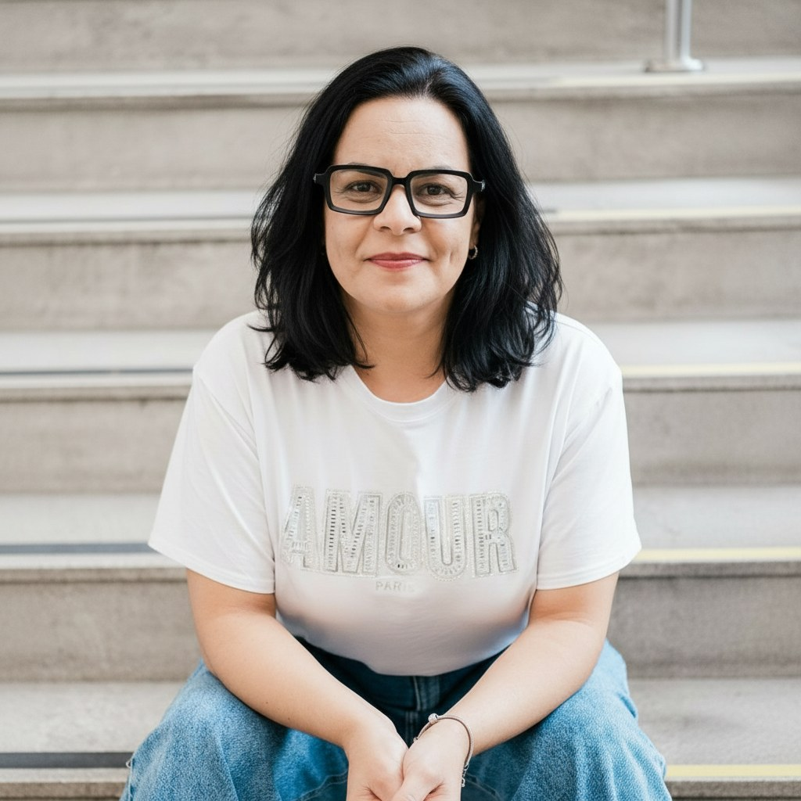

Reconhecer a história
Acolher o que a família vive, compreender seu contexto e identificar o que precisa de atenção.
O PROTEGE é um programa institucional do SERMEP que articula escuta, orientação e acompanhamento para apoiar famílias nos desafios da parentalidade.
Um espaço seguro de escuta, sem julgamento e sem fórmulas prontas — onde a história de cada família orienta o cuidado e a construção de novas possibilidades.
Conheça nossa atuação ↗A Educação Parental é um campo de atuação voltado à compreensão das dinâmicas familiares. No PROTEGE, essa atuação parte da escuta e do respeito à singularidade de cada família, reconhecendo seus desafios, recursos e possibilidades.
O acompanhamento favorece o autoconhecimento: perceber padrões, compreender as relações e refletir sobre a família que se deseja construir. A partir desse processo, são elaborados caminhos possíveis para a continuidade, a convivência e o exercício da parentalidade.
Trabalhamos na prevenção e no fortalecimento dos vínculos, com ferramentas próprias de atuação, protocolos em construção, atividades e supervisão — sempre com as famílias. Esses percursos buscam oferecer apoio mais estruturado aos desafios parentais.
Acolher o que a família vive, compreender seu contexto e identificar o que precisa de atenção.
Refletir sobre a convivência, os vínculos e as escolhas que orientam a convivência familiar.
Construir estratégias contextualizadas, registrar o processo e acompanhar os próximos passos.
Sistema de Educação e Recursos Metodológicos em Educação Parental.
Formação, prática e conhecimento para sustentar a atuação com famílias.
O SERMEP desenvolve e coordena o PROTEGE, articulando desenvolvimento profissional, supervisão e atuação com famílias. Seu trabalho contribui para a construção do campo da Educação Parental por meio de práticas estruturadas, reflexões éticas e produção de conhecimento.
É nesse encontro entre escuta e experiência que se desenvolvem instrumentos, se organizam registros e se fortalecem caminhos para uma atuação responsável.
Conectar formação e prática no trabalho com famílias.
Apoiar a reflexão sobre os atendimentos e as estratégias utilizadas.
Construir ferramentas, protocolos e registros de acompanhamento.
Organizar experiências e contribuir para a produção de conhecimento, livros e devolutivas.

Fundadora e idealizadora do PROTEGE
À frente do SERMEP
Neuropsicopedagoga · Neuropsicanalista · Educadora Parental
A trajetória de Ana Paula Alves reúne estudo, atuação profissional e experiência com famílias. A Psicopedagogia, a Neuropsicopedagogia e a Neuropsicanálise e os estudos em Neurociências compõem seu percurso de compreensão do desenvolvimento humano e das relações.
Seu trabalho como mãe e sua atuação na rede de ensino familiar aprofundaram o compromisso com uma escuta que reconhece a realidade de cada pessoa. Esse percurso deu origem a iniciativas de apoio às famílias e ao desenvolvimento profissional em Educação Parental.
Por meio do SERMEP, articula supervisão, projetos e produção autoral. O PROTEGE faz parte dessa construção: um programa que aproxima conhecimento, prática e responsabilidade no trabalho com as dinâmicas familiares.
A história do PROTEGE também se constrói com contribuições que aproximam a formação profissional da experiência com famílias.
A realização e a coordenação do programa são do SERMEP.
Em 2025, a parceria com Jacqueline Vilela possibilitou uma experiência de atuação com seus alunos nos atendimentos às famílias, contribuindo para o percurso formativo e prático do programa.
Conheça a Parent ↗Carregando profissionais cadastrados...